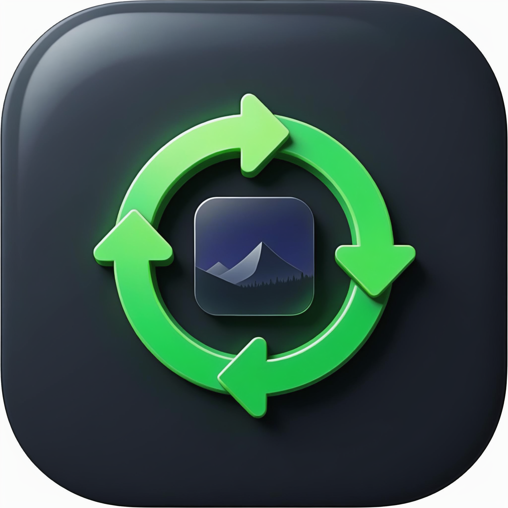

Convert
ANY image
to ANY format
V3.2 Pro Dark Studio — Now with resizable sidebar (drag 200-400px, saved), Windows 11 Mica/Acrylic blur (Ctrl+Shift+A), ripple on every button, glassmorphism empty states with neon dot. Linear/Figma/Raycast inspired, 50+ formats, 100% offline.
TO
Product-grade, not dev-tool — V3.2
Resizable, acrylic, ripple — feels like $20/mo.
Resizable Sidebar
Drag handle at right edge — 200-400px, saved to config ui.sidebar_width, cursor sb_h_double_arrow, neon on hover. Like VS Code.
Acrylic Mica Blur
Windows 11 Mica + AcrylicBlurBehind via DWM SetWindowCompositionAttribute. Ctrl+Shift+A toggle, dark mode aware, fallback. Glassmorphism pro.
Ripple Micro-interactions
Material ripple on every button — expanding oval from click point, press scale 2px, hover lift. Pulse on convert when ready.
Command Palette+
Ctrl+K now includes theme (Ctrl+T), titlebar (Ctrl+Shift+T), acrylic (Ctrl+Shift+A), resize hint. Search filter.
Light / Dark + Titlebar
Toggle light/dark, custom traffic lights draggable, theme-aware acrylic, animations hover/pulse/ripple, page fade.
Glass Empty States
Premium empty states — glass card #1a1a1d, neon dot, Segoe UI bold, hint pill. No more boring placeholder.
Ready to switch? V3.2
Per-user install, no admin. Offline only • Resizable • Acrylic • Ripple
1. Clone & Run V3.2
git clone https://github.com/muhummadzarrar09-sudo/python-image-switcher.git cd python-image-switcher pip install -r requirements.txt python src/app.py # Drag sidebar • Ctrl+Shift+A acrylic • Ripple on click
2. Install (Recommended)
powershell -NoProfile -ExecutionPolicy Bypass -File .\install.ps1 -Force # with context menu .\install.ps1 -FileAssociations -ContextMenu
3. Check Branches
python tools/pinger.py --branches # watch python tools/pinger.py --branches --watch --interval 60